Next: Bipolar Junction Transistor (BJT) Up: ch4 Previous: Semiconductor materials
A diode is formed by a PN-junction with the p side called anode and the n side called cathode. Due to the fact that there exist few freely movable charge carriers in the depletion region around the PN-junction, the conductivity is very poor. However, when external voltage is applied to the two ends of the material, the conductivity may change, depending one the polarity of the applied voltage.
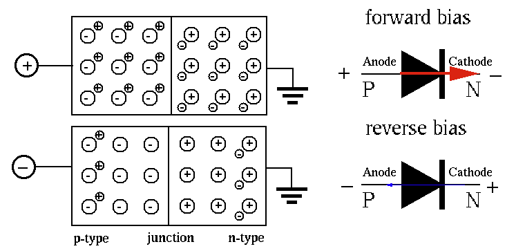
The positive voltage applied to the P-type will pull electrons in N-type and repel holes in P-type so that both carriers are moving towards the PN-junction. As the depletion region becomes thinner, the conductivity increases due to the drift current through the PN-junction from the P side to the N side, formed by the majority charge carriers (both electrons and holes) driven by the applied voltage. The conductivity increases as the applied voltage becomes higher.
The negative voltage applied to the P-type will repel electrons in N-type
and attract holes in P-type so that both carriers are moving away from
the PN-junction. As the depletion region becomes thicker than before,
there is no current through the PN-junction from the P side to the N side.
However, there exists a very small current  , called the
reverse saturation current,
due to the minority carriers.
The carrier velocity increases as the applied voltage becomes higher.
However, as the voltage further increases, the velocity will reach a
maximum level called
saturation velocity.
, called the
reverse saturation current,
due to the minority carriers.
The carrier velocity increases as the applied voltage becomes higher.
However, as the voltage further increases, the velocity will reach a
maximum level called
saturation velocity.
| 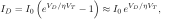or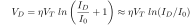 | (2) |
is the reverse saturation current, a tiny current that
flows in the reverse direction when  , due to the minority
carriers. As this current is limited by the minority carriers available,
when all of them are contributing to this current, higher voltage
, due to the minority
carriers. As this current is limited by the minority carriers available,
when all of them are contributing to this current, higher voltage  does not result in greater current, i.e., the current is saturated.
is about
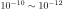 A for Si and 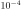 A for Ge.
does not result in greater current, i.e., the current is saturated.
is about
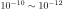 A for Si and 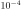 A for Ge.
 is the temperature in degree K. At room temperature 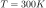
(
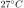),
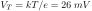.
is the temperature in degree K. At room temperature 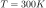
(
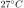),
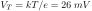.
 is the ideality factor which varies between 1 and 2, depending
on the fabrication process and semiconductor material. In many cases
can be assumed to be approximately equal to 1.
,
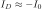;
is the ideality factor which varies between 1 and 2, depending
on the fabrication process and semiconductor material. In many cases
can be assumed to be approximately equal to 1.
,
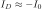;
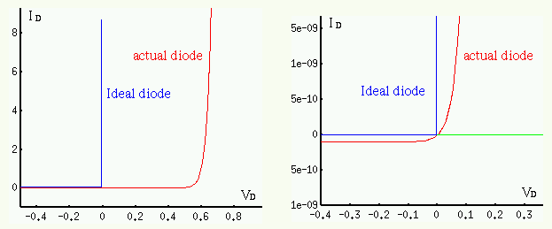
The voltage across the diode is a function of the current 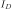 through
the diode. In the range of 5 mA to 20 mA, is about 0.7 V:
| 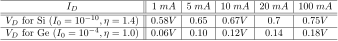 | (3) |
The resistance of an electrical device is defined as 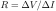. For a diode, as 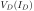 is not a linear function, the resistance 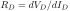 can be found as
| 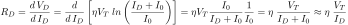 | (4) |
| 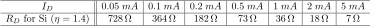 | (5) |
Models of diodes:
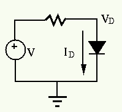
,
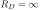, , else 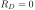, 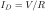.
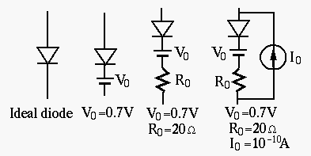 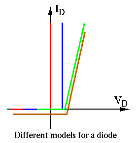
In general, when the forward voltage applied to a diode exceeds 0.6 to 0.7V for silicon (or 0.1 to 0.2 V for germanium) material, the diode is assumed to be conducting with low resistance.
Example: In the half-wave rectifier circuit shown below,
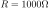, 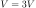, and  is a silicon diode. Find the current
through and voltage across .
is a silicon diode. Find the current
through and voltage across .
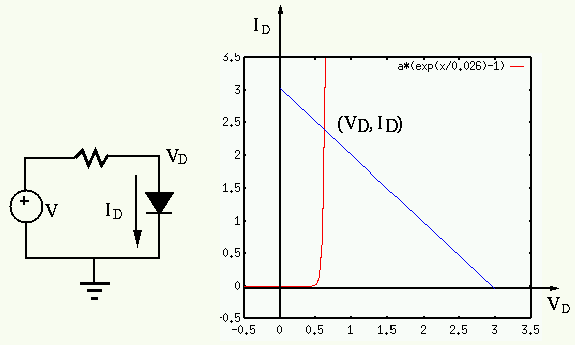
have to satisfy
two equations simultaneously:
| 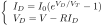 | (6) |
across a diode, while the second is obtained by KVL. Substituting the first
equation into the second, we get
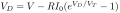. Substituting
this into the first equation we can then find .
Diodes are typically used as rectifiers which convert an AC voltage/current in to a DC one, such as shown in the following example.
Example 2: Design a converter (adaptor) that converts AC power supply of 115V and 60 Hz to a DC voltage source of 14 V. When the load is , the variation (ripple) of the output DC voltage must be 5% or less.
 , we get
.
, we get
.
| (7) |
More diode rectification circuits are shown below: